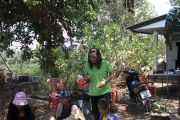
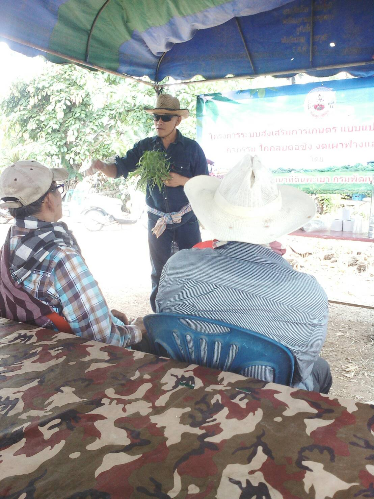

- ประชาชนพออยู่พอกินในระดับประหยัด เลี้ยงตนเองได้ ไม่อดอยาก ตามหลักปรัชญาของ "เศรษฐกิจพอเพียง"
- ในหน้าแล้งก็สามารถนำน้ำที่เก็บกักไว้ในสระมาปลูกพืชที่ใช้น้ำน้อย เช่น ถั่วต่างๆ ได้ โดยไม่ต้องอาศัยชลประทาน
- ในปีที่ฝนตกตามฤดูกาล ก็สามารถสร้างรายได้ให้ร่ำรวยได้
- - ในกรณีที่เกิดอุทกภัย ก็สามารถฟื้นตัว และช่วยตัวเองได้ในระดับหนึ่ง โดยราชการไม่ต้องช่วยเหลือมากนัก


เมื่อวันที่ 3 มีนาคม 2562 สหกรณ์การเกษตรทฤษฎีใหม่บ้านถ้ำ จำกัด จัดอบรมกลุ่มนาแปลงใหญ่ เพื่อจัดทำน้ำหมักชีวภาพจากสับปะรด ณ สวนของนางบัวผัด เมืองชื่น โดยมีเจ้าหน้าที่จากเกษตรอำเภอดอกคำใต้ให้ความรู้เรื่องการทำน้ำหมักชีวภาพ
สหกรณ์การเกษตรทฤษฎีใหม่บ้านถ้ำ จำกัด
http://www.sahakornthai.com/tsdbanthum/